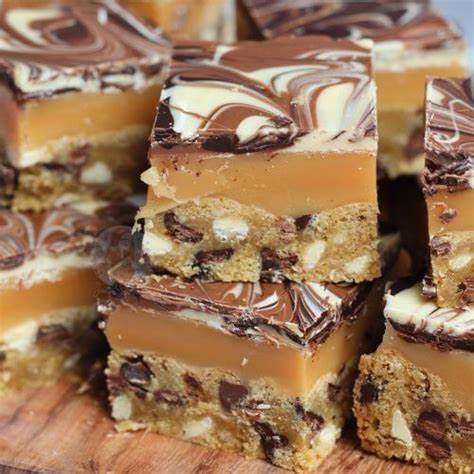

Chocolate Chip
home page

Chocolate Chip Cookie Millionaire Bars
You’ve probably heard of classic Millionaire Bars, but our Chocolate Chip Cookie Millionaire Bars take them to a whole new level. Instead of the traditional crisp shortbread base, we use a chewy, buttery chocolate chip cookie dough for a comforting, familiar texture (and a super easy shortcut!).
In these bars, a candy bar meets a homestyle cookie in the most decadent way. Each bite features nearly equal layers of cookie, rich caramel, and silky semisweet chocolate ganache. While you won’t get the traditional "snap" of a millionaire's shortbread, you’ll enjoy a more indulgent, tender, and satisfying treat.
Ingredients
- baking spray flower
- 2 (16 1/2-ounce) packages refrigerated break-and-bake chocolate chip cookie dough (such as Nestlé Toll House)
- 2 (14-ounce) cans sweetened condensed milk
- 1/2 cup packed light brown sugar
- 1/2 cup packed light brown sugar
- 1/2 cup packed light brown sugar
- 10 tablespoons unsalted butter, cut into 1 tablespoon pats, divided
- 2 (4-ounce) bars (56% cacao) semisweet chocolate, finely chopped
- 1/4 cup heavy whipping cream
- 1 teaspoon vanilla extract
Steps
- Gather all ingredients. Preheat oven to 350 degrees F (180 degrees C).
- Spray a 13- x 9-inch baking pan with baking spray; line bottom and sides with parchment paper, leaving a 1- to 2-inch overhang on long sides.
- Break apart dough squares along perforations and evenly scatter in bottom of the prepared pan. Let stand at room temperature until softened, 5 to 10 minutes. Using a sheet of plastic wrap placed directly on surface, press dough into an even layer in the bottom of the pan. Remove and discard plastic wrap
- Bake in the preheated oven until golden brown and a wooden pick inserted in center comes out clean or with just some moist crumbs, 25 to 30 minutes. Let cool in pan on a wire rack while making filling
- Add condensed milk, brown sugar, corn syrup, salt, and 1 cup of the butter to a large saucepan; cook over medium, whisking constantly, until butter is melted and mixture starts to bubble, about 10 minutes
- Continue to cook, whisking constantly, over medium until mixture is a caramel color, thickened, and registers 235°F on a candy or instant-read thermometer, about 10 minutes. Remove from heat and stir in vanilla until combined
- Working quickly, pour caramel over cookie layer, spreading into an even layer with a small offset spatula. Chill in refrigerator, uncovered, until set, about 1 hour.
- Add chocolate, cream, and remaining 2 tablespoons butter to a medium, heatproof bowl; place bowl over a saucepan filled with 1 inch of simmering water, making sure bottom of bowl does not touch water. Cook, stirring constantly, until chocolate mixture is melted and smooth, 2 to 3 minutes
- Working quickly, pour and spread chocolate mixture evenly over caramel layer. Chill in refrigerator, uncovered, until set, about 1 hour
- Using parchment paper as handles, remove from pan and place on a cutting board. Using a warm, dry, sharp knife, cut into bars; wipe knife clean with a damp paper towel between cuts, if desired. Serve immediately or store in an airtight container at room temperature for 3 to 5 days